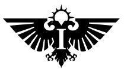

Adeptus Terra
| Adeptus Terra | |
|---|---|
| Central government | |
 Seal Artwork © Games Workshop | |
| Overview | |
| Also called | The Priesthood of Terra; the Priesthood of Earth; the Imperial Administration |
| Established | Grew from the civil government of the Unification Wars; reorganised under the High Lords of Terra after the Horus Heresy |
| State | Imperium of Mankind |
| Leader | Lord Commander of the Imperium (Roboute Guilliman, since c. 999.M41) |
| Governing body | High Lords of Terra |
| Seat | Imperial Palace, Terra |
| Adepta | Administratum; Adeptus Astra Telepathica; Adeptus Astronomica; Adeptus Arbites; Adeptus Custodes; Adeptus Astartes (by tradition, autonomous) |
| Allied bodies | Adeptus Mechanicus; Adeptus Ministorum; Inquisition (independent) |
| Staff | Many millions of adepts |
| Revenue | The Imperial tithe |
| Imperium of Mankind High Lords of Terra Lex Imperialis | |
The Adeptus Terra, also called the Priesthood of Terra, is the vast body of adepta that governs the Imperium of Mankind from Terra. It comprises the departments, offices and orders through which the will of the High Lords of Terra is carried out: the record-keeping and tithe-taking Administratum, the telepathic communicators of the Adeptus Astra Telepathica, the keepers of the Astronomican in the Adeptus Astronomica, and the judges of the Adeptus Arbites. It is less an agency than an umbrella over many autonomous departments, and its greatest figure in practice is the Master of the Administratum. Its adepts number in the many millions.[1]
The Adeptus Terra grew from the civil government that the Emperor of Mankind built during the Unification Wars and the Great Crusade. After the Emperor was interred within the Golden Throne, the Senatorum Imperialis of the High Lords took over the government of the Imperium, and it has directed the Adeptus Terra ever since.[1][2]
The Inquisition, the Adeptus Mechanicus and the Ecclesiarchy stand outside it, each with its own hierarchy. In the Era Indomitus the Adeptus Terra has been reformed in part by Roboute Guilliman, the restored Lord Commander, whose purge of the bureaucracy met resistance from within the High Lords themselves.[3]
History
[edit]Unification and the Great Crusade
[edit]The first adepts of Terra were bureaucrats who followed the Emperor's armies through the Unification Wars to build the foundations of his new regime. They were known as the Magisters Temporal, and as the realm grew they were reorganised as the Lords Civilian. The four greatest of them, the Master of the Administratum, the Chancellor of the Estate Imperium, the Grand Provost Marshal and the Lord Commander Militant, became the High Lords Civilian. Malcador was the Emperor's greatest ally in those wars and stood at his left hand in the War Council.[2][4]
As the Great Crusade carried the Imperium across the galaxy, the civil departments multiplied. The Imperial Administration assessed tithes and kept records; the Astra Telepathica gave the expeditions their means of communication; the Navigators' houses gave them the means of travel. After the Triumph of Ullanor, the Emperor left the war to his primarchs under the Warmaster Horus, returned to Terra, and created the Council of Terra to handle civil affairs, with Malcador as regent in his absence. The primarchs had no place in the Council, and several of them resented it. Horus and the powers of Chaos exploited that grievance, and Imperial historians count it among the causes of the Horus Heresy.[4][2]
The Heresy and the High Lords
[edit]The Council of Terra was disbanded in the months before the Siege of Terra, when the military took control of every part of Imperial life. During the Siege, Malcador willingly took the Emperor's place upon the Golden Throne, using his psychic power to hold back the Warp-spawn that sought to enter Terra. When the Heresy ended, the Emperor was interred in the Throne and could no longer rule directly.[4][2]
A temporary Grand Council of Reconstruction ruled the Imperium through the chaos of the Great Scouring. Early in the Time of Rebirth Roboute Guilliman set up the Senatorum Imperialis, the High Lords of Terra, with twelve seats, and took the chair himself as Lord Commander of the Imperium and Imperial Regent. The Adeptus Mechanicus remained outside the civil government, bound by the Treaty of Olympus (the Treaty of Mars), and the Adeptus Astartes, though formally part of the Adeptus Terra, kept wide autonomy from it.[2][1]
Growth and decay
[edit]In the early 32nd millennium the rise of the Imperial Creed won the Ecclesiarch a seat among the High Lords, which soon became permanent. In 546.M32, during the War of the Beast, the Grand Master of Assassins Drakan Vangorich had the whole Senatorum assassinated in the coup called the Beheading, and Chapter Masters of the Imperial Fists held the office of Lord Commander for a time.[2][5]
In the 36th millennium the Master of the Administratum, Goge Vandire, seized control of the Ministorum as well and ruled the Imperium as a tyrant in the Age of Apostasy, dissolving the Senatorum. The Fabricator-General and four Space Marine Chapters marched on Terra in the Terran Crusade of 378.M36, the reforming preacher Sebastian Thor rose against him, and Vandire was killed by his own bodyguard, Alicia Dominica. The Senatorum was restored, and the reforms that followed included the creation of the Ordo Hereticus and of the Adepta Sororitas.[6][2]
Era Indomitus
[edit]The return of Roboute Guilliman at the end of the 41st millennium brought the first sustained effort in ten thousand years to reform the Adeptus Terra. Guilliman, as Lord Commander and Imperial Regent, pledged to deal peacefully with the sitting High Lords, but soon removed and replaced five of them for corruption and incompetence, and ordered a general purge of the bureaucracy called the Primarch's Scourge. He found much of Mankind's history lost to superstition and suppression, and among his remedies was the Logos Historica Verita, an office charged with recovering an accurate history of the Imperium.[3][7]
Many High Lords continued to oppose him, longing for the stability of the old order. Some current and deposed High Lords, led by the former Master of the Administratum Irthu Haemotalio, formed the Hexarchy and attempted a coup, which the Grand Master of Assassins Fadix foiled.[3]
Organisation
[edit]
The Adeptus Terra is an umbrella organisation, and each of its divisions works largely autonomously from the others. The most powerful figure in it, and in practice in the whole Imperium, is the Master of the Administratum. Imperial authorities sometimes disagree about who holds authority over which adepta.[1]
By far the largest of the adepta. It assesses and collects the Imperial tithe, keeps the records of every world and allocates resources among them.[8]
Through the Departmento Munitorum it also supplies and directs the Astra Militarum. Its Master sits among the High Lords and is regarded as the most politically powerful of them.[8]
The Adeptus Astra Telepathica recruits and trains the Imperium's psykers, and provides the astropaths on whom all interstellar communication depends. Its Black Ships range across the galaxy in search of rogue psykers to capture and carry back to Terra.[9]
The Adeptus Astronomica maintains the Astronomican, the psychic beacon that guides Imperial navigation, a duty it has held since before the Heresy. Its head, the Master of the Astronomican, represents it as a High Lord of Terra.[9][10]
The Adeptus Arbites enforces Imperial law, as opposed to the laws of individual worlds, and guards against rebellion by planetary governors. Its head is the Lord Marshal of the Arbites.[11]
The Emperor's guardians are formally listed among the adepta of the Adeptus Terra, and are led by their Captain-General.[12]
The Administratum itself holds a great many lesser bodies, among them the Officio Agricultae, the Officio Medicae, the Astra Cartographica, the Navis Nobilite, the Officio Assassinorum, the Imperial Fleet and the planetary governors. The Adeptus Astra Telepathica holds the Sisters of Silence, and the Logos Historica Verita is a recent office of the Adeptus Terra. The Inquisition, the Adeptus Mechanicus and the Ecclesiarchy (with its Adepta Sororitas) are not part of it.[1][8]
Powers and relations
[edit]The Adeptus Terra rules the Imperium through the Imperial Commanders, the planetary governors and sector lords who answer to the Administratum for their tithe. Its orders reach them from the High Lords of Terra, who pass them down to the departments that carry them out.[1]
Relations with the Adeptus Mechanicus are governed by the Treaty of Mars, which left the Mechanicum its autonomy. The Ecclesiarch holds a seat among the High Lords, and the Inquisition answers to none of the adepta. Some Space Marine Chapters have clashed with the Inquisition and the Ministorum so bitterly that the quarrel has become open war.[1][13]
Timeline
[edit]| Date | Event |
|---|---|
| Unification Wars | The Magisters Temporal follow the Emperor's armies and become the Lords Civilian; the four greatest are the High Lords Civilian. |
| c. 798.M30 | The Great Crusade begins, and the civil departments of Terra multiply to serve it. |
| After 000.M31 | After the Triumph of Ullanor, the Emperor returns to Terra and creates the Council of Terra for civil affairs. |
| Before 014.M31 | The Council of Terra is disbanded in the months before the Siege of Terra. |
| 014.M31 | Malcador takes the Emperor's place on the Golden Throne during the Siege of Terra; the Emperor is later interred in it. |
| Early Time of Rebirth | After the Grand Council of Reconstruction, Guilliman founds the Senatorum Imperialis, the High Lords of Terra. |
| 546.M32 | During the War of the Beast the High Lords are assassinated in the Beheading. |
| M36 | During the Age of Apostasy, Goge Vandire rules both the Administratum and the Ecclesiarchy as a tyrant. |
| 378.M36 | The Terran Crusade marches on Terra against Vandire; he is killed by Alicia Dominica, ending the Reign of Blood. |
| c. 999.M41 | Roboute Guilliman returns to Terra as Lord Commander and Imperial Regent, removes five High Lords and begins the purge of the bureaucracy. |
| After 999.M41 | Guilliman founds the Logos Historica Verita, an office charged with recovering an accurate history of the Imperium. |
See also
[edit]References
[edit]- ^ a b c d e f g Haley, Guy. Dark Imperium (novel). Black Library. Ch. 9 "Imperator Gloriana," pp. 94-97. "Adeptus Terra". Warhammer 40k Wiki (Fandom).
- ^ a b c d e f g "High Lords of Terra". Warhammer 40k Wiki (Fandom).
- ^ a b c "High Lords of Terra". Warhammer 40k Wiki (Fandom). Warhammer 40,000: Rulebook (8th Edition). Games Workshop. pp. 24-25.
- ^ a b c "Council of Terra". Warhammer 40k Wiki (Fandom).
- ^ "The Beheading". Warhammer 40k Wiki (Fandom).
- ^ "Reign of Blood". Warhammer 40k Wiki (Fandom). "Alicia Dominica". Warhammer 40k Wiki (Fandom).
- ^ "Logos Historica Verita". Warhammer 40k Wiki (Fandom).
- ^ a b c "Administratum". Warhammer 40k Wiki (Fandom).
- ^ a b "Adeptus Astra Telepathica". Warhammer 40k Wiki (Fandom).
- ^ "Adeptus Astronomica". Warhammer 40k Wiki (Fandom).
- ^ "Adeptus Arbites". Warhammer 40k Wiki (Fandom).
- ^ "Adeptus Custodes". Warhammer 40k Wiki (Fandom).
- ^ "Treaty of Mars". Warhammer 40k Wiki (Fandom).